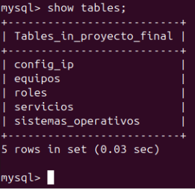

Configuración del servidor MySQL
- Entidad-Relación de la base de datos

- Instalación de mysql
sudo apt update
sudo apt install mysql-server
- Archivo de configuración
Vamos a editar el archivo de configuración para que se pueda acceder desde las demás máquinas. Accedemos a él, buscamos la linea de bind-address y la cambiamos la dirección IP a 0.0.0.0
sudo nano /etc/mysql/mysql.conf.d/mysqld.cnf
bind-address = 0.0.0.0

- Creación de la base de datos
Vamos a entrar en mysql a través de la terminal, crearemos la base de datos y las tablas.
sudo mysql
CREATE DATABASE IF NOT EXISTS proyecto_final;
USE proyecto_final;
CREATE TABLE nombre_tabla (
columnas tipo esp,
columnas tipo esp
);
Donde:
- nombre_tabla --> es el nombre que le asignaremos a la tabla que crearemos
- columnas --> el nombre que tendrá la columna
- tipo --> el tipo de información que habrá
- Ejemplo: INT, Varchar, etc
- esp --> si es primary key, not null, auto_increment, etc
- no es necesario poner siempre algo, es decir, si es una clave primaria lo especificaremos, pero en caso de que no fuera clave primaria o pudiera ser nulo (por ejemplo), no haría falta especificar nada.


- Inserción de la información
Una vez que tengamos las tablas creadas podremos poner la información en estas.
INSERT INTO nombre_tabla (nombre_columna, nombre_columna, nombre_columna) VALUES
(X,"X", "X"),
(X,"X", "X");
Donde:
- nombre_tabla --> es el nombre de una de las tablas creadas
- nombre_columna --> es el nombre de la/s columna/s en las que añadiremos información
-
X --> es la información que especificaremos
- habrá tantas
Xcomo columnas haya - los numeros se especificarán sin comillas
- las palabras se especificarán con comillas
- habrá tantas
-
Comprobar el funcionamiento
Para ver lo que hemos hecho vamos a hacer unas consultas a las tablas
- Listar todo de una tabla en específico
select * from tabla;
Donde:
- tabla --> es el nombre de la tabla que queremos ver